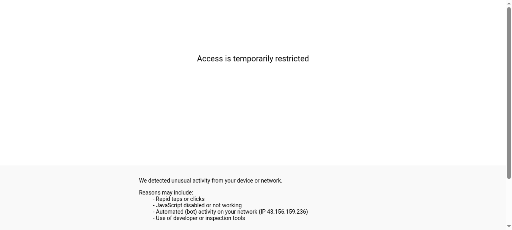

AI
OpenAI 宣佈推出「超級 App」：ChatGPT、Codex、Atlas 三合一
OpenAI Merges ChatGPT, Codex & Atlas Into Desktop Superapp
OpenAI 正式宣佈，將把 ChatGPT、程式碼開發平台 Codex 及 Atlas 網頁瀏覽器整合成單一桌面應用。高層坦言，過去分散的產品線拖慢了腳步。這次合併旨在將九億普通用戶轉化為付費進階用戶，加速 IPO 籌備。
OpenAI confirmed plans to fold ChatGPT, the Codex coding platform, and the Atlas browser into a single desktop application. Executives admitted that fragmented products had been slowing the company down. The consolidation aims to convert 900 million casual users into paying power users ahead of a potential IPO.
閱讀來源 Read Source